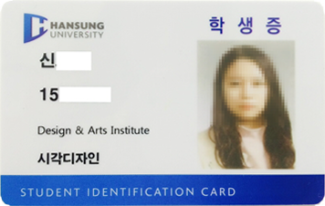
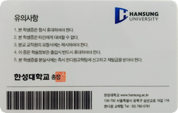

입학


진출분야
HOME > 입학 > 자주하는질문
- 기타
-
- 졸업 후 편입이나 대학원 진학도 할 수 있나요?
- 상위권 대학으로 진학을 희망하는 경우에는 4년제 학사학위를 받고 졸업한 이후 일반편입에 비해 경쟁률이 낮은 학사편입으로 지원할 수 있습니다. 또는 바로 대학원 진학을 선택하여 석사 과정을 밟을 수도 있습니다. 만일 한성대학교 대학원의 동일 계열 전공으로 진학하는 경우에는 성적에 관계 없이 재학 기간 내내 등록금의 30%를 장학금으로 지원받습니다.
- 시간제 / 등록제 평생교육원의 차이점이 무엇인가요?
- 평생교육원은 보통 두 가지 방식으로 운영됩니다. 시간제 평생교육원은 주로 3~40대 이상의 성인들을 대상으로 운영하며, 실생활에 필요한 교양, 취미 과목 위주의 수업으로 진행됩니다. 반면, 한성대학교 한디원과 같은 등록제 평생교육원은 주로 고3 학생들이 대상이 됩니다. 대학교 교육과정을 가르치며 해당 대학에서 수여하는 학위를 받을 수 있다는 큰 장점이 있습니다.
- 학위증과 졸업증명서의 차이는 무엇인가요?
- '학위증' 은 학위수여 시 교부되는 증서로 대학의 졸업장과 유사한 것입니다. 학위증은 교육과학기술부장관 혹은 대학의 총장 등에 의해 교부되는 것이므로 분실 시 재발급이 불가능한 서류이며 보관용일뿐 제출하는 용도로는 사용하실 수 없습니다. 반면 '학위증명서' 는 진학 또는 취업 시 최종학력증명서로 제출하기 위한 제출용 증명서로서 복수 발급이 가능합니다. 우리 기관에서는 학위수여 요건을 갖춘 자에게 ' 학위증 ' 과 '학위증명서' 를 모두 수여 또는 발급하고 있습니다.
- 한성대학교 총장 학위란?
- 한성대학교 총장 학위란 4년제 대학교인 한성대학교의 총장 명의로 수여하는 학사 학위입니다. 이 학사 학위는 4년제 대학교 졸업자와 동등한 자격으로 수여하는 것이며 회사에 취업을 하실 경우 초대졸이 아닌 4년제 대학교 졸업자 자격으로 지원이 가능하며, 편입을 희망하는 경우 '학사편입' 을 하실 수 있으며, 대학원으로 바로 진학하실 수 있습니다.
- 학생증은 나오나요?
- 우리 재학생의 학생증 발행은 한성대학교 본교에서 발행해 드리며, 본교 학생들과 동일한 포맷의 학생증을 교부받습니다. 지급해드린 학생증을 이용하여 도서관 등의 복지시설을 이용하실 수 있습니다.
 
- 학자금 대출은 되나요?
- 현재 학점은행제도에 의해 운영되는 모든 교육기관은 정부융자학자금 대출이 되고 있지 않습니다. (단, 공무원자녀와 교원자녀에게는 학자금 대출이 됨) 관련되는 많은 학교에서 교육과학기술부 산하 평생교육진흥원에 지속적으로 민원을 넣고 있으며, 근래에 어려운 경제 여건으로 인해 학비부담이 더욱 커질 것으로 예상되어 빠른 시일 내에 우리 학생들도 정부융자 학자금대출 혜택을 받을 수 있게 되기를 희망합니다. 우리 한디원에서도 학비에 대한 부담을 덜어 드리고자 아래와 같이 다양한 노력을 기하고 있습니다. 1. 재학생들에게는 등록금을 3차례에 걸쳐서 분할납부 할 수 있게 하고 있습니다. 2. 재학생들에게는 등록금전액을 비롯한 다양한 장학금을 드리고 있습니다. (성적장학금/공로장학금/근로장학금 등) 3. 신입생에게는 등록금 납부기한 연기를 통해 부담을 덜어드립니다.(상담 02-760-5781)
특별한 혜택은 어떤 것들이 있나요?
- 1. 한성대학교 총장명의 학사학위 취득
- 한성대학교 디자인아트평생교육원에 개설된 학사학위과정은 졸업 후 한성대학교 총장명의 학사학위(4년제 졸업학위)를 수여합니다.
- 2. 한성대학교 캠퍼스에서의 학교생활
- 한성대학교 본교에서 모든 캠퍼스 생활을 누릴 수 있으며, 한성대학교 학생증을 발급받아 교내 시설을 이용할 수 있습니다.
- 3. 다양하고 풍성한 장학혜택!
- 학생들의 학업의욕을 고취시키고 후생복지를 향상시키기 위해 한성대학교 총장 장학금, 교수추천 장학금, 근로장학금, 성적우수 장학금 등 폭넓은 장학혜택을 드리고 있습니다.
교과 과정표 장학 종류 선발 및 지급기준 총장 장학금 성적우수 및 학과의 추천을 받은자 평생교육원장 장학금 성적우수 및 학과의 추천을 받은자 성적우수 장학금 직전학기 평점을 기준으로 하며, 학과의 추천을 받은자 중 선발(학년별로 지급)최우수 등록금 전액, 우수와 장려는 일정액 지급. 공로 장학금 학과 발전에 기여한 공로가 있는지 총학생회임원 및 각 학년 임원 직급별 일정액 지급. 기술우수 장학금 기능경기대회 수상자로 관련학과에 입학한 자, 입상등급별 일정액 지급 근로 장학금 등록금 조달이 어려운 재학생들 중 본 학과의 특정 부서에서 근로한 자에게 일정액 지급. 교직원 자녀 장학금 교직원 자녀로써 성적이 우수하고 품행이 방정한 자에게 등록금 일정액 지급 보훈 장학금 국가유공자 및 그 직계자녀에게 등록금 전액 지급 형제자매 장학금 민법상의 2촌 이내인 형제자매가 동시에 재학중인 자에게 일정액 지급
- 4. 전문자격증 취득과 특별초청강의 및 전공 세미나 실시!
- 전문분야의 자격증 취득은 학점으로 인정받을 수 있으며 취업에 있어서도 유리한 조건을 부여합니다. 사회 각 분야 저명인사들의 특별초청강의 및 실무자들의 전공세미나 등 유익한 프로그램을 정기적으로 시행합니다.
- 5. 4년제 학위를 3년만에 취득하여 1년 더 빠른 사회진출! 졸업 후 100% 취업목표! 상위권 대학 편입 및 대학원 진학!
- 4년제 대학과 동일한 학사학위를 1년더 빨리 3년만에 취득하여 남들보다 한발 앞선 사회진출이 가능합니다. 뿐만 아니라 상위권 대학으로 학사편입 및 대학원 진학이 가능합니다.
- 6. 한성대학교 대학원 진학시 장학혜택 부여!
- 더 놓은 꿈을 위해 달려나가는 열정있는 학생들을 위해 한성대학교 대학원에서는 2년간 등록금의 50% 장학혜택을 부여합니다. (계열 전공)